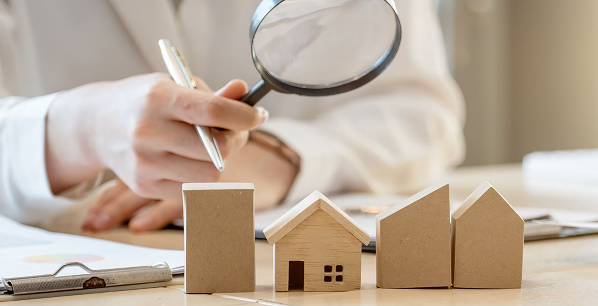
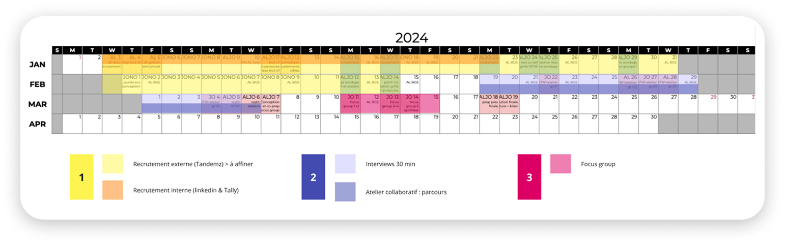
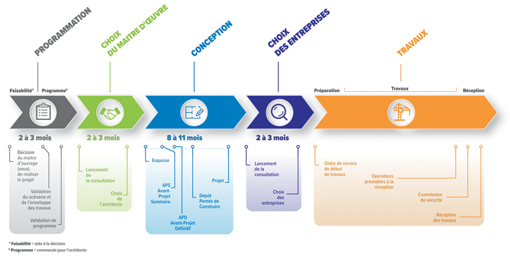
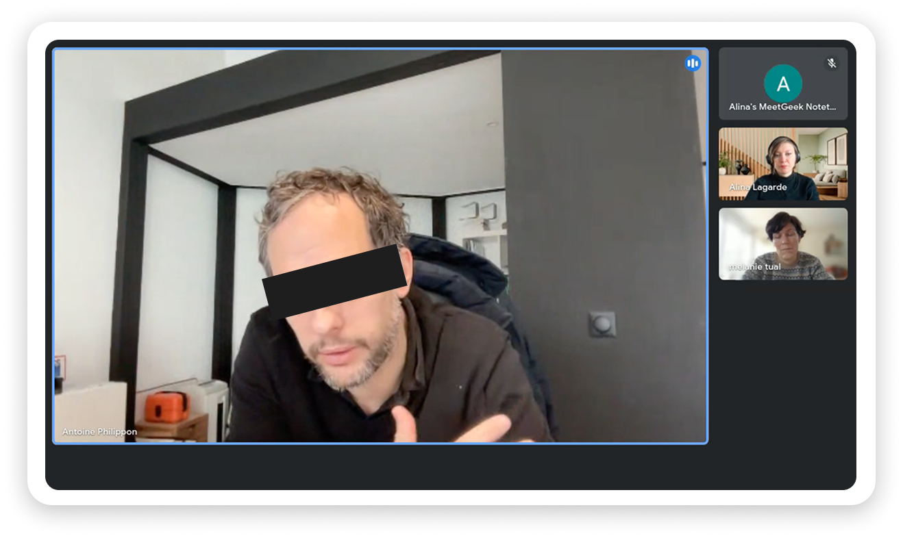
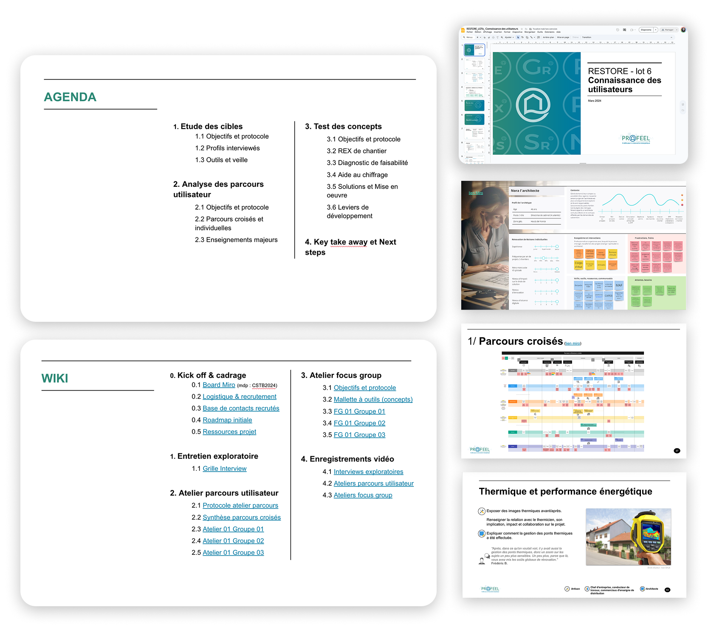

Entretiens exploratoires
18 sessions individuelles de 30 minutes, à distance via Google Meet.
Architectes (6) - Dirigeants / entreprises générales (3) - Artisans (4) - Conducteur de travaux (1) - Commerciaux distribution (3) - AMO (1)

Pour cadrer une roadmap d'outils IA-centric destinés à la rénovation énergétique des maisons individuelles.
Dans le cadre du programme RESTORE, le CSTB devait évaluer la réplicabilité technique, géographique et commerciale d'outils numériques conçus pour la rénovation énergétique de maisons individuelles.
Avant de pouvoir évaluer un outil, une question fondatrice devait être résolue : qui sont les utilisateurs réels, comment travaillent-ils et de quoi ont-ils effectivement besoin ?
Le périmètre couvrait cinq profils professionnels distincts de la chaîne de rénovation : architectes, artisans, assistants à maîtrise d'ouvrage (AMO), dirigeants d'entreprise et distributeurs. Chacun travaillait dans un contexte radicalement différent, avec ses propres processus, modes de décision et irritants.
Le véritable défi. Concevoir une recherche couvrant cinq profils avec des modèles mentaux, vocabulaires et façons de travailler très différents : de l'artisan indépendant au manager de distribution d'une grande enseigne.
Un protocole unique ne pouvait pas convenir à tous. Chaque phase devait être adaptée par profil, du recrutement à la structure des ateliers, dans un secteur fragmenté par des aides changeantes, des compétences variables et une défiance profonde entre acteurs : MAR, artisans et architectes.
Recrutement via les réseaux sociaux et les acteurs locaux de la rénovation, associations et organismes publics. Qualification via un sondage Tally.
18 sessions individuelles de 30 minutes, à distance via Google Meet.
Architectes (6) - Dirigeants / entreprises générales (3) - Artisans (4) - Conducteur de travaux (1) - Commerciaux distribution (3) - AMO (1)
13 participants répartis sur 3 sessions collectives de 3 heures sur Miro.
Des profils mixtes ont cartographié l'ensemble du cycle de vie d'un projet de rénovation.
3 focus groups pour évaluer 4 concepts : REX de chantier, diagnostic de faisabilité, outil de chiffrage et guide de mise en oeuvre.
Outils : Miro - Meetgeek - Google Meet - Google Sheets - Google Slides
Mobilisation via les réseaux sociaux et les acteurs locaux. Qualification et logistique par sondage Tally ; grille de recrutement sous Google Sheets.
18 entretiens individuels enregistrés et retranscrits via Meetgeek pour cartographier pratiques, irritants, veille et décision.
3 sessions collectives sur Miro : étapes, points de douleur, frictions entre acteurs et opportunités par profil.
4 concepts évalués en 3 focus groups : compréhension, désirabilité, adéquation aux workflows réels et pistes d'amélioration.




5 profils consolidés et leur écosystème - 3 parcours détaillés couvrant conception, chiffrage et exécution - 4 concepts testés avec verbatims et recommandations de redesign - synthèse complète livrée au CSTB.
La recherche a directement déclenché une mission de tests complémentaire. Deux prototypes ont été validés avec des utilisateurs : un diagnostic de faisabilité, sous forme de quiz guidé simulant une évaluation professionnelle avec un propriétaire, et un module de reconnaissance architecturale identifiant la typologie du bâti par géolocalisation et forme.
Plusieurs autres outils, dont un estimateur financier, ont été développés et livrés sans tests utilisateurs.
Dans un écosystème métier fragmenté, un outil utile doit parler un langage partagé par toute la chaîne.
En rénovation, chaque métier intervient à un moment précis avec son propre vocabulaire et ses contraintes ; sans expert coordinateur, les passages de relais créent des dysfonctionnements structurels. Un outil couvrant toute la chaîne peut faire la différence, à condition de s'interfacer avec les écosystèmes déjà utilisés.
Réflexion. Le recrutement a été de loin la partie la plus difficile : certains profils ont nécessité 1 à 1,5 mois de mobilisation, malgré l'appui du CSTB. Un enseignement contre-intuitif : réengager les mêmes participants sur plusieurs sessions s'est avéré bien plus facile que recruter de nouveaux profils. À l'avenir, le temps de recrutement doit être budgété séparément et de façon réaliste dans ce secteur.
To frame an AI-centric tool roadmap for the energy renovation of individual homes.
Within the RESTORE programme, the CSTB needed to evaluate the technical, geographic, and commercial replicability of digital tools designed for the energy renovation of individual homes.
Before any tool could be assessed, a foundational question had to be answered: who are the real users, how do they work, and what do they actually need?
The scope covered five distinct professional profiles across the renovation chain - architects, artisans, project managers (AMO), company heads, and distributors - each operating in radically different contexts, with different processes, decision-making patterns, and pain points.
The real challenge. The mission required designing research across five professional profiles with fundamentally different mental models, vocabularies, and ways of working - from solo artisans to distribution managers at major retail chains.
A single protocol could not cover all of them. Every phase required adaptation by profile, from recruitment strategy to workshop structure, in a sector shaped by changing regulatory aids, uneven competencies and deep distrust between stakeholders: MAR, artisans and architects.
Recruitment via social networks and local renovation stakeholders, including associations and public agencies. Qualification via a Tally survey.
18 individual sessions of 30 minutes, remotely via Google Meet.
Architects (6) - Company heads / general contractors (3) - Artisans (4) - Site supervisors (1) - Distribution sales reps (3) - AMO (1)
13 participants across 3 collective sessions of 3 hours each on Miro.
Mixed profiles per group mapped against the full renovation project lifecycle.
3 groups testing 4 tool concepts: Site REX, feasibility diagnostic, cost estimation tool and implementation guide.
Tools: Miro - Meetgeek - Google Meet - Google Sheets - Google Slides
Outreach via social networks and local renovation actors. Tally survey for logistics and screening; recruitment grid managed in Google Sheets.
18 monitored interviews to map practices, pain points, monitoring processes and decision-making patterns; recorded and transcribed via Meetgeek.
3 collective Miro sessions mapping stages, pain points, cross-actor friction and opportunities across the lifecycle.
3 focus groups evaluating 4 concepts for comprehension, desirability, real workflow fit and improvement leads.
5 consolidated user profiles and their stakeholder ecosystem - 3 detailed user journeys covering design, cost estimation and execution - 4 concepts tested with verbatims and redesign recommendations - full synthesis delivered to CSTB.
The research directly triggered a follow-up testing mission. Two prototypes were validated with users: a feasibility diagnostic tool, a guided quiz simulating a professional site assessment with a homeowner, and an architectural recognition module identifying building typology from geolocation and shape.
Several other tools, including a financial estimator, were developed and shipped without user testing.
Tools in fragmented professional ecosystems need a shared language across very different user profiles.
In renovation, each trade intervenes at a specific moment with its own vocabulary and constraints. Without a coordinating expert, handoffs between trades generate structural dysfunction. A tool that speaks to the whole chain can make a difference, but only if it interfaces with every existing ecosystem its users already rely on.
Reflection. Recruitment was by far the hardest part of the mission: specific profiles took 1 to 1.5 months to mobilize despite CSTB's outreach support. One counter-intuitive finding was that re-engaging the same participants across multiple sessions was significantly easier than recruiting fresh profiles. Future proposals in this sector will budget recruitment time separately and realistically.